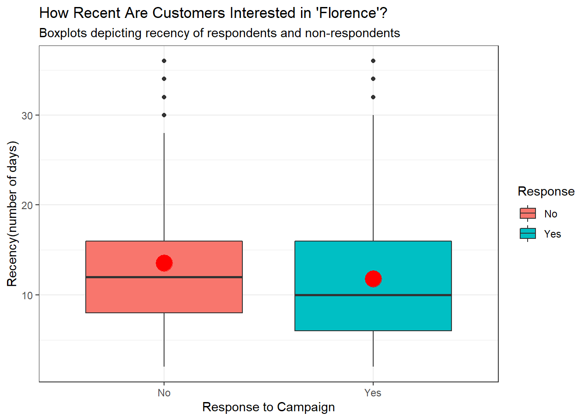
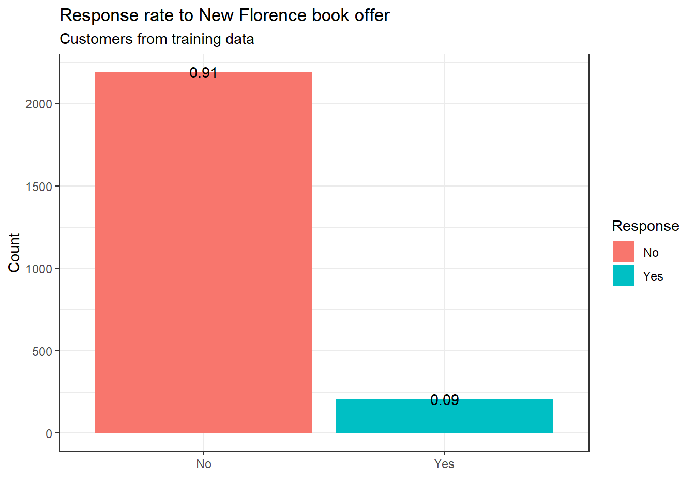

5 Prediction with RFM

Figure 5.1: Foto from pexels.com
The Charles Book Club case was derived, with the assistance of Ms. Vinni Bhandari, from The Bookbinders Club, a Case Study in Database Marketing, prepared by Nissan Levin and Jacob Zahavi, Tel Aviv University
The Charles Book Club (CBC) was established in December 1986 on the premise that a book club could differentiate itself through a deep understanding of its customer base and by delivering uniquely tailored offerings. CBC focused on selling specialty books by direct marketing through a variety of channels, including media advertising (TV, magazines, newspapers) and mailing. CBC is strictly a distributor and does not publish any of the books that it sells. In line with its commitment to understanding its customer base, CBC built and maintained a detailed database about its club members. Upon enrollment, readers were required to fill out an insert and mail it to CBC. Through this process, CBC created an active database of 500,000 readers; most were acquired through advertising in specialty magazines.
Historically, book clubs offered their readers different types of membership programs. Two common membership programs are the continuity and negative option programs, which are both extended contractual relationships between the club and its members. Under a continuity program, a reader signs up by accepting an offer of several books for just a few dollars (plus shipping and handling) and an agreement to receive a shipment of one or two books each month thereafter at more-standard pricing. The continuity program is most common in the children’s book market, where parents are willing to delegate the rights to the book club to make a selection, and much of the club’s prestige depends on the quality of its selections.
In a negative option program, readers get to select how many and which additional books they would like to receive. However, the club’s selection of the month is delivered to them automatically unless they specifically mark “no” on their order form by a deadline date. Negative option programs sometimes result in customer dissatisfaction and always give rise to significant mailing and processing costs.
In an attempt to combat these trends, some book clubs have begun to offer books on a positive option basis, but only to specific segments of their customer base that are likely to be receptive to specific offers. Rather than expanding the volume and coverage of mailings, some book clubs are beginning to use database-marketing techniques to target customers more accurately. Information contained in their databases is used to identify who is most likely to be interested in a specific offer. This information enables clubs to design special programs carefully tailored to meet their customer segments’ varying needs.
5.1 Background information
A new title, The Art History of Florence, is ready for release. CBC sent a test mailing to a random sample of 4000 customers from its customer base. The customer responses have been collated with past purchase data. Each row (or case) in the spreadsheet (other than the header) corresponds to one market test customer. Each column is a variable, with the header row giving the name of the variable.
CBC sent mailings to its club members each month containing the latest offerings. On the surface, CBC appeared very successful: mailing volume was increasing, book selection was diversifying and growing, and their customer database was increasing. However, their bottom-line profits were falling. The decreasing profits led CBC to revisit their original plan of using database marketing to improve mailing yields and to stay profitable.
5.2 Recency - Frequency - Monetary Analysis
The segmentation process in database marketing aims to partition customers in a list of prospects into homogeneous groups (segments) that are similar with respect to buying behavior. The homogeneity criterion we need for segmentation is the propensity to purchase the offering. However, since we cannot measure this attribute, we use variables that are plausible indicators of this propensity.
In the direct marketing business, the most commonly used variables are the RFM variables:
- R = recency, time since last purchase
- F = frequency, number of previous purchases from the company over a period
- M = monetary, amount of money spent on the company’s products over a period
The assumption is that the more recent the last purchase, the more products bought from the company in the past, and the more money spent in the past buying the company’s products, the more likely the customer is to purchase the product offered.
The observations in the dataset were divided into recency, frequency, and monetary categories as follows:
- Recency:
| Recency | Recode |
|---|---|
| 0–2 months | Rcode = 1 |
| 3–6 months | Rcode = 2 |
| 7–12 months | Rcode = 3 |
| 13 months and up | Rcode = 4 |
- Frequency:
| Frequency | Recode |
|---|---|
| 1 book | Fcode = 1 |
| 2 books | Fcode = 2 |
| 3 books | Fcode = 3 |
- Monetary:
| Monetary | Recode |
|---|---|
| 0 – 25 | Mcode = 1 |
| 26–50 | Mcode = 2 |
| 51–100 | Mcode = 3 |
| 101–200 | Mcode = 4 |
| 201 and up | Mcode = 5 |
| Note: Montary values are denoted in USD |
5.3 Assignment
Partition the data into training (60%) and validation (40%). Use seed = 1.
What is the response rate for the training data customers taken as a whole? What is the response rate for each of the 4×5×3 = 60 combinations of RFM categories? Which combinations have response rates in the training data that are above the overall response in the training data?
Before we answer the question, let us explore the data set:
## Rows: 4,000
## Columns: 24
## $ Seq. <int> 1, 2, 3, 4, 5, 6, 7, 8, 9, 10, 11, 12, 13, 14, 15,...
## $ ID. <int> 25, 29, 46, 47, 51, 60, 61, 79, 81, 90, 95, 100, 1...
## $ Gender <int> 1, 0, 1, 1, 1, 1, 1, 1, 1, 1, 1, 0, 1, 0, 1, 1, 1,...
## $ M <int> 297, 128, 138, 228, 257, 145, 190, 187, 252, 240, ...
## $ R <int> 14, 8, 22, 2, 10, 6, 16, 14, 10, 6, 2, 2, 4, 14, 4...
## $ F <int> 2, 2, 7, 1, 1, 2, 1, 1, 1, 3, 4, 3, 1, 1, 2, 9, 6,...
## $ FirstPurch <int> 22, 10, 56, 2, 10, 12, 16, 14, 10, 20, 20, 18, 4, ...
## $ ChildBks <int> 0, 0, 2, 0, 0, 0, 0, 1, 0, 0, 0, 0, 0, 1, 0, 2, 2,...
## $ YouthBks <int> 1, 0, 1, 0, 0, 0, 0, 0, 0, 0, 0, 0, 0, 0, 0, 0, 1,...
## $ CookBks <int> 1, 0, 2, 0, 0, 0, 0, 0, 0, 1, 1, 0, 0, 0, 0, 3, 2,...
## $ DoItYBks <int> 0, 0, 0, 0, 0, 0, 0, 0, 0, 0, 0, 0, 0, 0, 0, 0, 0,...
## $ RefBks <int> 0, 0, 1, 0, 0, 0, 0, 0, 0, 0, 0, 0, 0, 0, 0, 1, 0,...
## $ ArtBks <int> 0, 0, 0, 0, 0, 0, 0, 0, 0, 0, 0, 1, 0, 0, 0, 1, 1,...
## $ GeogBks <int> 0, 0, 1, 0, 0, 0, 1, 0, 0, 0, 0, 0, 0, 0, 0, 2, 0,...
## $ ItalCook <int> 0, 0, 1, 0, 0, 0, 0, 0, 0, 0, 0, 0, 0, 0, 0, 1, 1,...
## $ ItalAtlas <int> 0, 0, 0, 0, 0, 0, 0, 0, 0, 0, 0, 0, 0, 0, 0, 1, 0,...
## $ ItalArt <int> 0, 0, 0, 0, 0, 0, 0, 0, 0, 0, 0, 0, 0, 0, 0, 1, 0,...
## $ Florence <int> 0, 0, 0, 0, 0, 0, 0, 0, 0, 0, 0, 1, 1, 0, 0, 0, 0,...
## $ Related.Purchase <int> 0, 0, 2, 0, 0, 0, 1, 0, 0, 0, 0, 1, 0, 0, 0, 6, 2,...
## $ Mcode <int> 5, 4, 4, 5, 5, 4, 4, 4, 5, 5, 5, 5, 5, 4, 5, 5, 5,...
## $ Rcode <int> 4, 3, 4, 1, 3, 2, 4, 4, 3, 2, 1, 1, 2, 4, 2, 4, 4,...
## $ Fcode <int> 2, 2, 3, 1, 1, 2, 1, 1, 1, 3, 3, 3, 1, 1, 2, 3, 3,...
## $ Yes_Florence <int> 0, 0, 0, 0, 0, 0, 0, 0, 0, 0, 0, 1, 1, 0, 0, 0, 0,...
## $ No_Florence <int> 1, 1, 1, 1, 1, 1, 1, 1, 1, 1, 1, 0, 0, 1, 1, 1, 1,...First, we will convert the response variable to factor class.
data$Yes_Florence <- factor(data$Yes_Florence, labels = c("No","Yes"),levels = c(0:1))
data$No_Florence <-factor(data$No_Florence, labels = c("No","Yes"),levels = c(0:1))Second, we would need to compute RFM score by merging three scores into one cell.
# Calculating RFM score
data$RFM_score<- paste(data$Rcode,data$Fcode,data$Mcode)
data$RFM_score <- gsub(" ","",data$RFM_score)
data$RFM_score<-as.factor(data$RFM_score)
data[1:10,"RFM_score"]## [1] 425 324 434 115 315 224 414 414 315 235
## 51 Levels: 111 112 113 114 115 122 123 124 125 132 133 134 135 211 212 ... 435Now we will proceed with data partition. For that we will use sample() function, where we indicate rownames and the number of randomly selected row numbers we want to separate from the remaining data set.
In our case, out of 4000 rows (Customers), we will randomly assign 2400 to train data set, and the rest to test data.
# Train data
set.seed(1)
trainIndex <- caret::createDataPartition(data$Florence, p = .6,
list = FALSE,
times = 1)
train_data <- data[ trainIndex,]The remaining part of the data set will be assigned to the validation data set.
# Validation set
validation_data <- data[-trainIndex,]5.4 Visual exploration
It would be beneficial to inspect relationship between recency, frequency and monetary value in the whole data set before we continue. A quite convenient way to do it is a heatmap. There we can plot all three variables at the same time and inspect the monetary value (= amount spend in the time frame observed) of each customer based on his/her frequency and recency.

Unsurprisingly, customers who purchased more frequently generated more revenue compared to those who visited less frequently. However, customers who spent the most are not the most recent ones (= last purchase in 0-2): the heaviest spenders are the frequent ones, but they haven’t made a purchase 3 to 6 months. Usually, we assume that the customers who visited the book club in the recent past (0-2 months) are more likely to return compared to those who made a purchase some time ago as most of those could potentially be lost customers. As such, higher revenue would be associated with most recent visits, but we see that is not really the case here. This could be related to the nature of books as products and the fact that they are not frequently purchased items such as daily products for instance. Nevertheless, it would definitively be worth to consider giving incentives to these customers who spent the most and the company has not heard of them for 3-6 months.
A legit question for better understanding of our target group would be about the difference in recency of customers who responded to advertising of “Florence.”

There seem to be difference in means of the two groups. Non-respondents are somewhat less frequent customers, while respondents belong to more frequent customers. Based on this insight, book lovers are on average more interested in purchasing the new title. Let us inspect their recency.

Customers who responded to the “Florence” campaign have on average lower recency than customers who did not respond. All in all, we can conclude that customers who responded to the campaign are, on average, slightly more frequent and recent than customers who did not respond to campaign.
5.5 Overall response rate
Now we can start with addressing the following question: What is the response rate for training data customers taken as whole? Let us compare the percentage of customers in the training data set who responded against those who did not.

Based on the visualisation we see that the overall response rate of customers from the training data is around 9%.
## [1] 0.087083335.6 Prediction of response rate
Next question we need to address is which combinations of RFM categories have response rates that are above the overall response in the training data. Now we would need to inspect response rates from all 51 combinations, and compare them with the overall one.
## # A tibble: 51 x 3
## RFM_score Response_rate Count
## <fct> <dbl> <int>
## 1 132 1 1
## 2 122 0.5 2
## 3 211 0.333 3
## 4 212 0.333 9
## 5 233 0.333 6
## 6 114 0.25 16
## 7 215 0.179 28
## 8 135 0.170 53
## 9 223 0.167 24
## 10 335 0.153 215
## # ... with 41 more rowsWe can see that there are some RFM categories that have a way higher response rate than 9%. Let us filter the data and keep these RFM categories. The following RFM scores indicate response rate higher than 9%:
## # A tibble: 19 x 3
## RFM_score Response_rate Count
## <fct> <dbl> <int>
## 1 132 1 1
## 2 122 0.5 2
## 3 211 0.333 3
## 4 212 0.333 9
## 5 233 0.333 6
## 6 114 0.25 16
## 7 215 0.179 28
## 8 135 0.170 53
## 9 223 0.167 24
## 10 335 0.153 215
## 11 235 0.151 93
## 12 234 0.146 41
## 13 213 0.136 22
## 14 125 0.118 17
## 15 433 0.118 17
## 16 115 0.115 26
## 17 224 0.114 35
## 18 225 0.114 44
## 19 323 0.1 40By doing so, we can already identify customers who are more likely to respond to our marketing campaign. However, let us check how well these response rate from corresponding RFM categories predict the response rate of the same RFM category in the validation data. Therefore, we will compare the average response rate of RFM combinations with above 9% response rate from training data with the average response rate of the same corresponding RFM combinations from the validation data.

Predicted response rate from the training data set is said to be at around 15.1%, while the true response rate taken from validation set is at 10.3%. From comparison of true response rate in the validation data set and the predicted response rate from the training data set it seems that the latter pretty much deviates from the former. In the next section we will split customers from the training set into 3 clusters, and again compare predicted with the true response rate.
5.7 Prediction of response rate with 3 segments
In the previous step we split our RFM categories into two segments, those who had the response rate below 9% percent, and those with above. Let us now rethink segments, and divide our customers in 3 different segments:
- Segment 1: RFM combinations that have response rates that exceed twice the overall response rate - RR_Twice.
- Segment 2: RFM combinations that exceed the overall response rate but do not exceed twice that rate - RR_Above.
- Segment 3: the remaining RFM combinations - RR_Below
## # A tibble: 51 x 4
## RFM_score Response_rate Count Cluster
## <fct> <dbl> <int> <chr>
## 1 132 1 1 RR_Twice
## 2 122 0.5 2 RR_Twice
## 3 211 0.333 3 RR_Twice
## 4 212 0.333 9 RR_Twice
## 5 233 0.333 6 RR_Twice
## 6 114 0.25 16 RR_Twice
## 7 215 0.179 28 RR_Twice
## 8 135 0.170 53 RR_Above
## 9 223 0.167 24 RR_Above
## 10 335 0.153 215 RR_Above
## # ... with 41 more rowsWe classified RFM scores based on response rate into 3 segments. Now we will again check how good predictors are these response rates for predicting response rate of the same RFM categories the validation set. We do it by comparing predicted/expected response rate from the training data set with the actual response rate in the validation set.

By visual inspection we could see that predicted response rates are above the the ones in two out of 3 segments.Customers who had response rate at least twice the initial response rate (9%) were expected to have around 25% response rate, but the true response rate is at significantly lower 9.5% response rate. Similarly, the RFM prediction in case of customers who had response rate between 9 and 18% was slightly inaccurate as well(predicted 14.1 % vs 10.4% true response rate). The only case where true response rate exceeded the predicted response rate is the segment with the response rate below 9%.
5.8 Efficiency of the predictions
So far, our analysis helped us identify customer segments who are more or less likely to respond to our campaign. However, in order to determine how effectively we can proceed with our campaign, i.e. target those who are most likely to respond to our campaign, we will construct a gain chart. We aim at selecting a relatively small number of customers and getting a relatively large portion of respondents. For a given number of customers expressed in percentages, the gain curve value on the y-axis will show us how much better we are doing compared to random choice of customers.
## # A tibble: 6 x 30
## # Groups: RFM_score [4]
## Seq. ID. Gender M R F FirstPurch ChildBks YouthBks CookBks
## <int> <int> <int> <int> <int> <int> <int> <int> <int> <int>
## 1 422 3739 1 43 2 2 4 0 0 0
## 2 1371 11461 1 41 2 2 10 0 0 0
## 3 3087 25511 0 49 2 2 10 0 0 0
## 4 117 1010 1 31 6 1 6 0 0 0
## 5 709 6183 1 83 4 5 26 0 0 2
## 6 2418 19884 1 22 6 1 6 0 0 0
## # ... with 20 more variables: DoItYBks <int>, RefBks <int>, ArtBks <int>,
## # GeogBks <int>, ItalCook <int>, ItalAtlas <int>, ItalArt <int>,
## # Florence <int>, Related.Purchase <int>, Mcode <int>, Rcode <int>,
## # Fcode <int>, Yes_Florence <fct>, No_Florence <fct>, RFM_score <fct>,
## # Predicted_RR <dbl>, Count <int>, Predicted_Cluster <chr>, True_RR <dbl>,
## # True_Cluster <chr>In order to create such a chart, we will need the information on who responded and who did not respond to our mailing offer from the validation set (= “Florence” column), and the information about the expected response rate based on what we did in our training data. Additionally, we will create a cumulative sum, so that with every customer who responded to our mailing offer the cumulative sum increases by 1.
## # A tibble: 1,600 x 3
## Florence Predicted_RR Cumulative_Class
## <int> <dbl> <int>
## 1 1 0.5 1
## 2 0 0.5 1
## 3 0 0.5 1
## 4 0 0.333 1
## 5 0 0.333 1
## 6 0 0.333 1
## 7 0 0.333 1
## 8 1 0.333 2
## 9 0 0.333 2
## 10 0 0.333 2
## # ... with 1,590 more rowsNow we can use this data to create the lift/gain chart with caret package:
Based on the gain chart, prediction based on our RFM model performs a bit better than baseline, i.e. random guessing. More specifically, if we target the top 20% customers, meaning the 20% of customers with highest response rates predicted based on their RFM score, it would be expected to reach around 31% of the total number of customers who would respond to our offer.
As the graph is interactive, you are able to check any other percentage you wish. Although we managed to create a model that performs better than just guessing, in the further analyses we will try out other approaches, such as logistic regression, that may provide us better results.
5.9 Summary of the solution
CBC embraced the idea of deriving intelligence from their data to allow them to know their customers better and enable multiple targeted campaigns where each target audience would receive appropriate mailings. CBC’s management decided to focus its efforts on the most profitable customers and prospects, and to design targeted marketing strategies to best reach them. The two processes they had in place were:
1. Customer acquisition:
New members would be acquired by advertising in specialty magazines, newspapers, and social media.
Direct mailing would contact existing club members.
Every new book would be offered to club members before general advertising.
2. Data collection:
All customer responses would be recorded and maintained in the database.
Any information not being collected that is critical would be requested from the customer.
We must be aware that this approach is not the most sophisticated one, but it shows how with pretty simple course of the actions each new title/product can be immediately advertised to the relevant target group. They could use the two-step approach we just demonstrated:
Conduct a market test involving a random sample of customers from the database to enable analysis of customer responses. The analysis would create and calibrate response models for the current book offering.
Based on the response models, compute a RFM score for each customer in the database prior to sending out offers. Use this score and a cutoff value to extract a target customer list for the promotion.
5.10 Reference
- Shmueli, G., Bruce, P. C., Yahav, I., Patel, N. R., & Lichtendahl, K. C. (2018). Data mining for business analytics: Concepts, techniques, and applications in R.